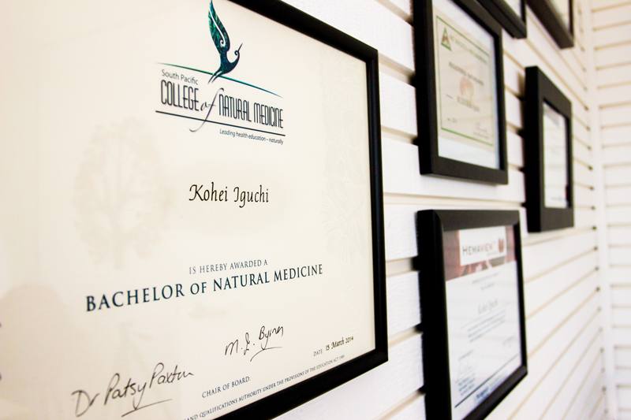

“Eczema is not just a skin condition. It’s an internal condition. I know, because I have suffered from it myself.”
Before he became a naturopath, Kohei was covered head to toe in eczema. It grew so severe he had to resign from his job, and was bed-ridden for nearly five months — living on steroids and antibiotics, in constant pain from dry, weeping, itchy skin.
When the steroids stopped giving relief, a naturopath took him through a thorough consultation that changed everything. A year and a half later, through nutritional, dietary and lifestyle support, his skin was 99.9% eczema-free. That experience became a lifelong passion for natural medicine.
Today Kohei is a qualified naturopath, medical herbalist and dark-field microscopist with over ten years treating skin conditions — and hundreds of eczema patients behind him. He treats every person as an individual, because no two cases are the same.